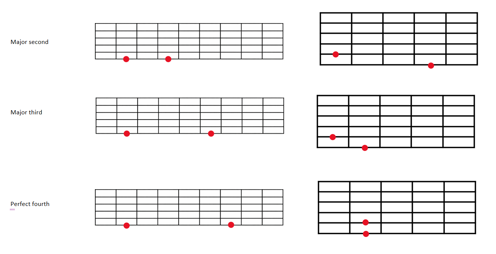
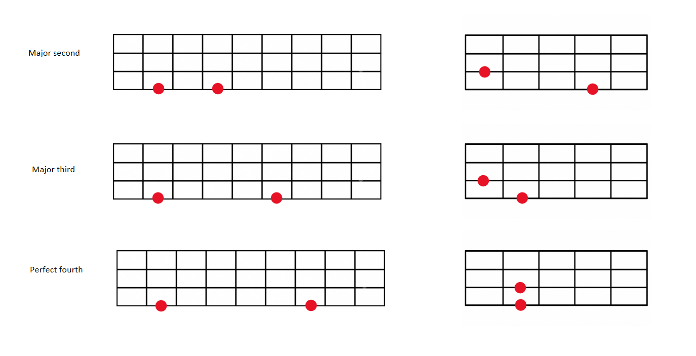

Recognize Sound of Intervals (6 months)
Types of intervals
The 13 musical intervals are perfect unison, minor second, major second, minor third, major third, perfect fourth, tritone, perfect fifth, minor sixth, major sixth, minor seventh, major seventh, and perfect octave. It is important to recognize both the interval being played and whether it is ascending or descending.
This is a preview of how the first three ascending intervals sound. Do not memorize the intervals yet.
This is a preview of how the first three descending intervals sound
Intervals can be visualized vertically or horizontally across the fretboard. This is an example of how they can be seen horizontally.

Horizontal on the left and vertical on the right
Intervals can be visualized vertically or horizontally in the guitar and the bass.But in the piano theres is only one way to look at them (horizontally)
Intervals can be visualized vertically or horizontally across the bass neck. This is an example of how they can be seen horizontally.

Horizontal on the left and vertical on the right
Intervals repeat across the fretboard starting at the octave. For example, the minor ninth and major ninth have the same recognizable sound as the minor second and major second, respectively. Therefore, it is preferable to name intervals from unison to octave. On this webpage, you should not refer to them as ninths, tenths, or elevenths.
Major second vs Major ninth
major third vs major tenth
Use a mnemonic table to memorize them
I memorized intervals by listening to just the song fragment with the interval using the clideo app. It took me two weeks per interval with just 5 minutes a day. While learning, test yourself with the intervals you know on the Toned Ear website. When you consistently score 90% accuracy, move to the next chapter.
| Interval | Ascending | Descending |
|---|---|---|
| Minor 2nd | Jaws Theme | Joy to the World |
| Major 2nd | Happy Birthday | Three Blind Mice |
| Minor 3rd | Brahms – Lullaby | Barney – I Love You |
| Major 3rd | Keyboard Cat! | Summertime – Mica Paris |
| Perfect 4th | O Christmas Tree | I've Been Working on the Railroad |
| Tritone | The Beatles – And I Love Her | Pearl Jam – Even Flow |
| Perfect 5th | Twinkle Twinkle Little Star | Flintstones Opening |
| Minor 6th | Love Story Theme – Francis Lai | Love Story Theme – Francis Lai |
| Major 6th | Frank Sinatra – My Way | Barrett Sisters – Nobody Knows the Trouble |
| Minor 7th | Celine Dion – Somewhere | The Rolling Stones – Lady Jane |
| Major 7th | a-ha – Take On Me | Jo Stafford – I Love You |
| Perfect 8th | Somewhere Over the Rainbow – The Wizard of Oz | There's No Business Like Show Business – Irving Berlin |